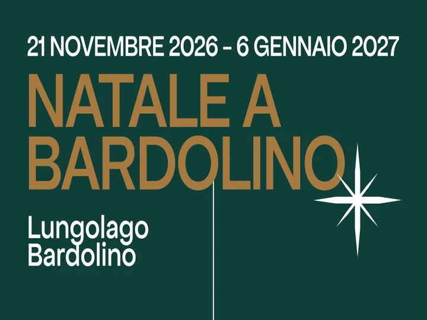

da sab 21 nov a mer 6 gen
Natale a Bardolino 2026
Dal 21 novembre 2026 al 6 gennaio 2027 il lungolago e il centro storico accolgono migliaia di visitatori per far loro vivere la magica atmosfera natalizia! Un cartellone ricco di appuntamenti e di eventi attende i visitatori. Il mercatino di Natale , con 40 espositori, è sul…
 Indicazioni
Indicazioni
- Costi e prenotazioni
- Costo non indicato · Prenotazione non indicata
- Programma
- Programma da verificare. Apri la fonte ufficiale per orari e possibili aggiornamenti.
- In caso di maltempo
- Nessuna indicazione specifica pubblicata.
- Note
- Acquisito automaticamente dalla fonte.
L’EVENTO
Descrizione completa
Dal 21 novembre 2026 al 6 gennaio 2027 il lungolago e il centro storico accolgono migliaia di visitatori per far loro vivere la magica atmosfera natalizia! Un cartellone ricco di appuntamenti e di eventi attende i visitatori. Il mercatino di Natale , con 40 espositori, è sul Lungolago e al Parco Carrara Bottagisio .
Parco Carrara Bottagisio, ospiterà tre delle maggiori attrazioni: la pista di pattinaggio sul ghiaccio sull'acqua quest'anno ancora più grande, la ruota panoramica e la slitta interattiva di Babbo Natale 3D cinema visione mentre per i piccini i giochi nel parco.
Sul Lungolago, nella splendida conca di Bardolino, decine di aziende attentamente selezionate propongono i loro prodotti di alta qualità: dall’enogastronomia tradizionale, all’artigianato locale, passando per l’originalità degli articoli natalizi home made. Da non perdere un giro per il paese con il trenino turistico oppure ammirare lo splendido paesaggio salendo sulla ruota panoramica !
In Piazza del Porto, invece, tutti i bambini potranno divertirsi con la giostra cavalli e dal 6 dicembre sarà possibile ammirare il presepe subacqueo .
Anche al porto di Cisano dal 30 novembre sarà possibile vedere il presepe subacqueo. Molte saranno le mostre che ospiteranno opera di pittura, scultura e fotografia di artiti locali.
Passeggiando per il centro storico si potranno visitare la chiesa di S. Severo con l'annessa Sala della Disciplina che ospiterà la mostra "Presepi dal mondo", la Chiesetta di San Zeno e la parrocchiale di San Nicolò, tutto avvolta dall'atmosfera natalizia e da tantissime luci che trasformano Bardolino in uno splendido villaggio natalizio in riva al Lago di Garda.
Mercoledì 31 dicembre si festeggerà il Capodanno in riva al Lago con tanta musica e divertimento per tutti al Parco Carrara Bottagisio fino a tarda notte, pista di pattinaggio sull'acqua aperta per l'occasione e a mezzanotte tutti con il naso all'insù per lo spettacolo di fuochi d'artificio .
Bardolino vi aspetta per farvi godere della magica atmosfera del Natale!
IL PROGRAMMA
Programma e orari
Appuntamenti raccolti dalle fonti elencate. Dove manca un orario, non è ancora disponibile in questa scheda.
Programma pubblicato
- 2026-11-21 — 2027-01-06 ·
INFORMAZIONI UTILI
Prima di partire
- Controllare la fonte prima di partire.
ORGANIZZAZIONE